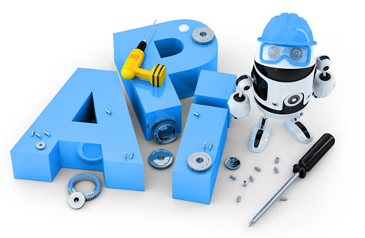

NestJS培训¶
{kind=link}
NestJS 是 Node.Js 渐进式框架，用来建立高效可伸缩式的服务端应用，底层默认使用 express（可以通过 Adapter 转换到 fastify），可以使用 express 或者 fastify 所有中间件，完美支持 TypeScript。熟悉 Spring 和 Angular 的同学可以很快上手 NestJS，它大量借鉴了 Spring 和 Angular 中的设计思想。
我们开展的NestJS课程是一种高质量的、经过实战考验的培训体验，带有最新的课件，可以上门到您的公司，
也可以作为公开课程在线授课。
在整个培训过程中，我们将构建一个真实的NestJS应用程序，向您教授框架的所有基本和高级内容。
课程介绍
1. Becoming familiar with the NestJS framework and its components
2. Designing and developing REST APIs performing CRUD operations
3. Authentication and Authorization for back-end applications
4. Using TypeORM for database interaction
5. Security best practices, password hashing and storing sensitive information
6. Persisting data using a database
7. Deploying back-end applications at a production-ready state to Amazon Web Services
8. Writing clean, maintainable code in-line with industry standards
9. Utilising the NestJS Command Line Interface (CLI)
10. Using Postman for testing back-end services
11. Using pgAdmin as an interface tool to manage PostgreSQL databases
12. Implement efficient logging in a back-end application
13. Environment-based configuration management and environment variables
14. Implementing data validation and using Pipes
15. Guarding endpoints for authorized users using Guards
16. Modelling entities for the persistence layer
17. TypeScript best practices
18. Handling asynchronous operations using async-await
19. Using Data Transfer Objects (DTO)
20. Hands-on experience JSON Web Tokens (JWT)
21. Unit testing NestJS applications
联系热线：15871352105